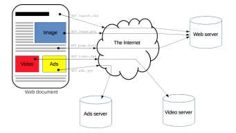
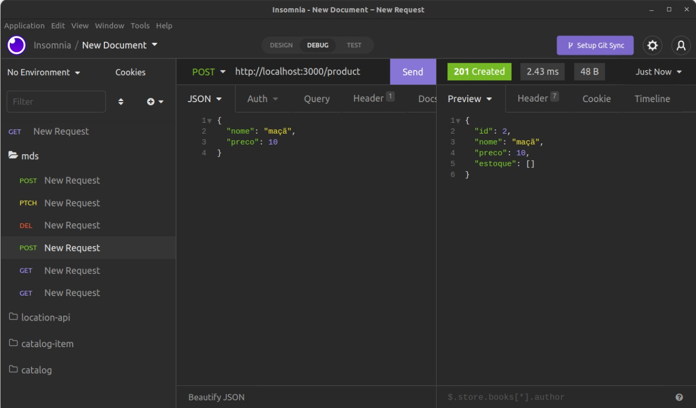
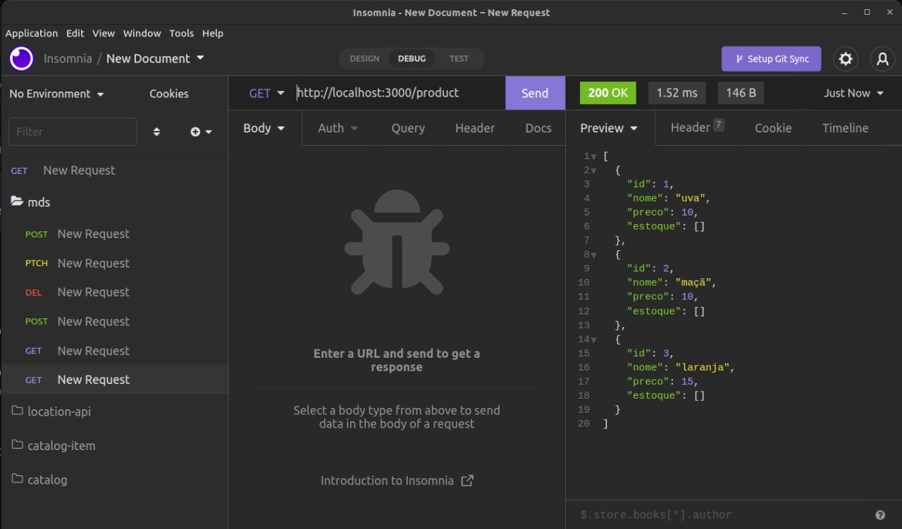
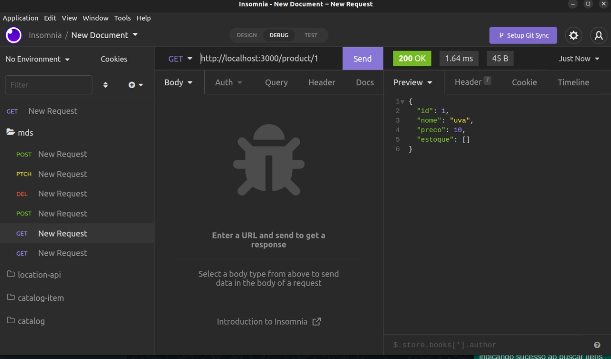
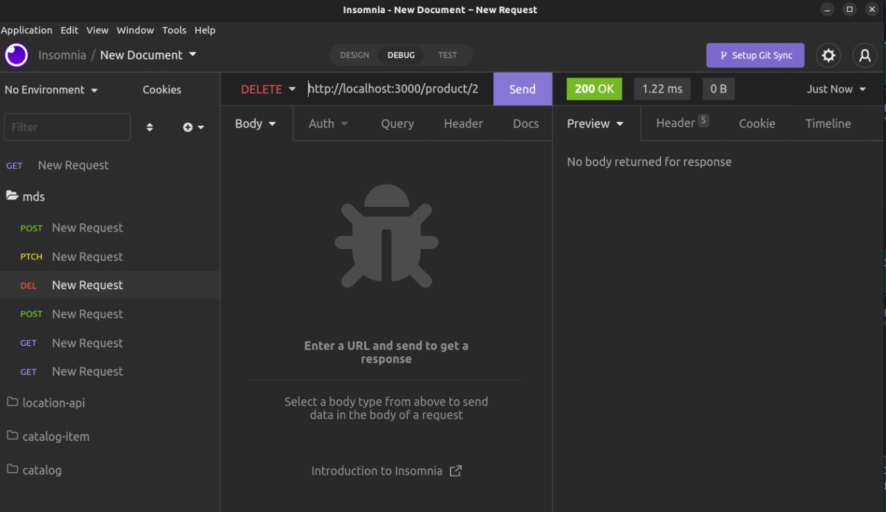
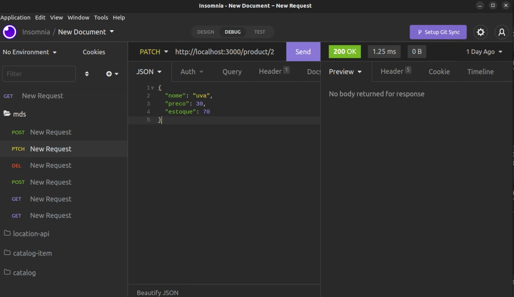

Histórico de Versão
| Data | Versão | Descrição | Autor |
|---|---|---|---|
| 18/07/2022 | 0.1 | Criação do documento | Shaíne, Renan, José e Matheus |
| 21/07/2022 | 0.2 | Entrega do documento | Shaíne, Renan, José e Matheus |
Desenvolvedores
Renan Rodrigues
Colaboradores
José Filipi, Shaíne Oliveira, Matheus Phillipo
Conteúdo
Construção de api's com framework nestJs e comunicação de microsserviços.
Nest.js e Microsserviços
NestJS é um framework de Node.js orientado a aplicações do lado do servidor (server-side), utilizando como base servidores HTTP como Express e Fastify. Dessa forma o desenvolvimento pode ser feito de maneira eficiente e escalável.
O que são Microsserviços
Microsserviços são uma abordagem de arquitetura de software, onde o software consiste em pequenos serviços independentes que se comunicam usando APIs bem definidas. Dentre as vantagens desse tipo de abordagem é possível citar:
▶ Facilitam a escalabilidade e diminuem o tempo de desenvolvimento de aplicações.
▶ Simplificam o processo de atualização de recursos de acordo com a demanda do uso dos serviços.
▶ Habilitam a inovação rápida e diminuem a possibilidade de falhas e bugs da aplicação, uma vez que cada serviço possui autonomia de funcionamento.
Como funciona o HTTP
▶ Ao digitar uma URL em um navegador web é realizada uma conexão com o servidor correspondente para a recuperação do IP.
▶ Após isso, a requisição HTTP é feita ao servidor, caso a página exista, a resposta será seu próprio conteúdo, caso o servidor não encontre a página será retornado o Erro HTTP 404 (página não encontrada).
▶ Por fim, a conexão com servidor é finalizada e a resposta é exibida no navegador para o usuário que realizou a requisição.

Códigos de resposta HTTP
▶ Códigos 20X: Estes códigos estão relacionados ao sucesso da requisição,porém o significado do sucesso varia de acordo com o método solicitado,como é feito pelo código 201 (Created), que retorna como resposta a criação de um novo recurso no servidor após uma requisição de método POST.
▶ Códigos 40X: Códigos exibidos para resultados onde não foi possível concluir a requisição por erros ligados ao lado do usuário, como por exemplo o clássico Erro 404 (Página não encontrada).
▶ Códigos 50X: Códigos exibidos para resultados onde não foi possível concluir a requisição por erros ligados ao lado do servidor, representado por exemplo pelo Erro 502 (Bad Gateway).
Primeiros passos
Para o workshop, é necessário verificar se o computador contêm o Node.js e o Insomnia instalados.
Você pode checar na sua máquina se tem o Node instalado, abrindo o terminal digitando:
node --version
npm --version
PS: É recomendável ter a versão estável mais recente, podendo checar no próprio site https://nodejs.org/en/
. Clone o repositório do workshop em https://github.com/LacerdaRenan/api-nest-mds
. Inicialize projeto nas máquinas com os comandos 'npm install', 'npm start'
Objetivos
Entender o que significam os HTTP codes e aplicá-los, Construir e consumir API's para entender como funciona o processo básico de backend.
Ao final do workshop, você será capaz de:
. Consumir apis disponíveis e verificar os respectivos HTTP codes.
. Verificar erros implantados em APIs e tentar fazer a correção.
Exercícios
Realizar requisições HTTP nos seguintes endereços
get http://localhost:3000/product
Requisição para buscar todos produtos
get http://localhost:3000/product/id
Requisição para buscar produtos by id
post http://localhost:3000/product, Body dto {"nome": "string", "preco": 10}
Requisição para cadastro de produto
patch http://localhost:3000/product/id Body dto {"nome": "string", "preco": 10}
Requisição para atualização de produto
delete patch http://localhost:3000/product/id
Requisição para deleção de produto by id
Resultados Esperados
Exemplo de requisição post com status code 201 indicando que houve criação de item com sucesso

Exemplo de requisição get com status code 200 indicando sucesso ao buscar itens

Exemplo de requisição get com parâmetro id indicado na url. status code 200 indicando sucesso

Exemplo de requisição delete com parâmetro id indicado na url

Exemplo de requisição patch com parametro id indicado na url

Referência
Documentação do Nestjs, acessado em https://docs.nestjs.com/
W3 Schools, acessado em https://w3schools.com/.